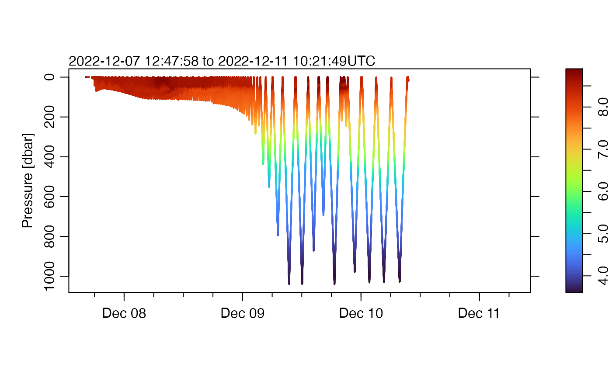
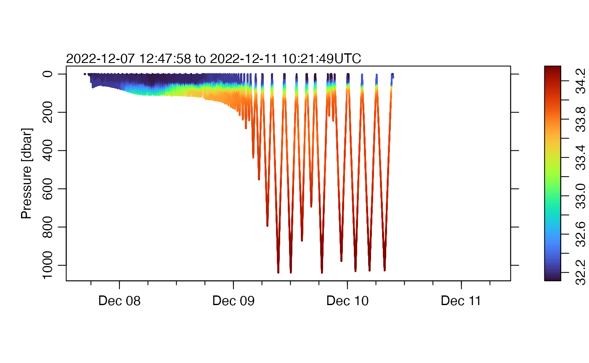

Handling Slocum Glider Data
Dan Kelley (https://orcid.org/0000-0001-7808-5911)
2025-02-15
Source:vignettes/slocum_glider.Rmd
slocum_glider.RmdAbstract. This vignette explains the basics of using the oceglider package on Slocum data. The main difference from SeaExplorer files is in the layout of the objects, with SeaExplorer basically considering glider and payload in separate streams. But normal use, with plotting, subsetting, etc., does not require the user to consider the details of the layout.
For this vignette to be suitable for CRAN submission, it must not download files to the user’s working space. We avoid that by setting aside space in the next line.
fileNC <- tempfile(fileext = ".nc") # to hold a binary (NetCDF) fileNote that this fileNC file will be deleted at the end of
this vignette. Obviously, in actual practice, the analyst is likely to
store the downloaded file in a more permanent location, and not to
delete it when finished a particular task.
Some Common Steps with Slocum Datasets
We will use a dataset from CPROOF (Reference 1).
library(oceglider)
#> Loading required package: ncdf4
#> Loading required package: oce
#> Loading required package: gsw
url <- paste0(
"https://cproof.uvic.ca/gliderdata/deployments/",
"dfo-bumblebee998/dfo-bumblebee998-20221207/",
"L0-timeseries/",
"dfo-bumblebee998-20221207_delayed.nc"
)
file <- gsub(".*/", "", url)
# 45.8 MB file: download takes 0.4s user, 0.9s system but 11s elapsed
if (!file.exists(file)) {
system.time(curl::curl_download(url = url, destfile = file, mode = "wb"))
}
g <- read.glider.netcdf(file) # under 0.2sIt always makes sense to get a summary, to see what data are contained in the object.
summary(g)
#> Glider Summary
#> --------------
#>
#> * Type: slocum
#> * Subtype: ?
#> * Input file:
#> dfo-bumblebee998-20221207_delayed.nc
#> * Time: 2022-12-07 16:15:54 to 2022-12-11 06:53:54 (mean increment 1.366 s)
#> * Data Overview:
#> Min. Mean Max. Dim. OriginalName
#> latitude [°N] 48.962 49.087 49.159 228325 latitude
#> longitude [°E] -127.35 -126.82 -125.9 228325 longitude
#> heading [rad] 0.0081383 3.5527 6.2779 228325 heading
#> pitch [rad] -0.91705 -0.0039137 0.96655 228325 pitch
#> roll [rad] -0.41012 -0.0049735 0.23825 228325 roll
#> waypointLatitude [°N] 0 48.033 48.852 228325 waypoint_latitude
#> waypointLongitude [°E] -130.2 -128.77 0 228325 waypoint_longitude
#> conductivity [S/m] 2e-05 3.3763 3.5003 228325 conductivity
#> temperature [°C] 3.4766 7.1911 14.208 228325 temperature
#> pressure [dbar] -0.2657 234.62 1039.6 228325 pressure
#> chlorophyll [mg/m³] 0.0219 0.24789 12.096 228325 chlorophyll
#> cdom [ppb] -3.8178 0.91799 97.899 228325 cdom
#> backscatter700 0.00010584 0.00033849 0.0077169 228325 backscatter_700
#> oxygenConcentration [μmol/l] 8.644 148.74 293.94 228325 oxygen_concentration
#> u [m/s] -0.51893 -0.12134 0.12245 228325 u
#> v [m/s] -0.075335 0.070058 0.31982 228325 v
#> depth [m] -0.26345 232.28 1028.2 228325 depth
#> distanceOverGround 0 85.221 155.63 228325 distance_over_ground
#> salinity 4.3609e-06 33.197 34.369 228325 salinity
#> potentialDensity [kg/m³] 999.61 1026 1027.4 228325 potential_density
#> density [kg/m³] 999.67 1026.9 1032 228325 density
#> potentialTemperature [°C] 3.4022 7.1654 10.95 228325 potential_temperature
#> profileIndex 0 147.51 218 228325 profile_index
#> profileDirection -1 0.014065 1 228325 profile_direction
#>
#> * Processing Log
#>
#> - 2025-02-15 10:51:48 UTC: `create 'glider' object`Next, make a map to see where the sampling was done.
plot(g, which = "map")This map comports with the one on Reference 2, except we have proper
scaling of the axes, because oceglider computes an aspect
ratio that will preserve shapes at the centre of the plot.
Next, examine the pressure-time trajectory.
plot(g, which = "p")Note that there is a large region of whitespace on the right of the
plot panel. This is because the dataset has time values in that
interval, but all the pressure values are NA. The subset()
function could be used to trim the dataset, but that is not necessarily
wise because there could be other valuable data (even just longitude and
latitude are valuable, in case the hydrographic sensors provide nothing
useable).
We can show temperature on a similar plot, by switching from lines to points, and colour-coding by temperature.
plot(g, which = "p", type = "p", pch = 20, cex = 0.2, colorby = "temperature")Notice that the colour palette ranges up to red, although only a small region of the graph has that colour. but a quick glance at the graph does not reveal many points that are of sufficient temperature to be indicated with that color. The methods illustrated in the SeaExplorer vignette can be employed here, but for brevity we will just use percentile trimming to get a diagram that at least provides an initial view of the data.
plot(g,
which = "p", type = "p", pch = 20, cex = 0.2, colorby = "temperature",
colorbylim = quantile(g[["temperature"]], c(0.01, 0.99), na.rm = TRUE)
)
Readers might agree that this version looks better, displaying more features than in the first plot.
Salinity is often a problem, but we’ll do the same thing, first plotting all the data.
plot(g, which = "p", type = "p", pch = 20, cex = 0.2, colorby = "salinity")And, second, trimming.
plot(g,
which = "p", type = "p", pch = 20, cex = 0.2, colorby = "salinity",
colorbylim = quantile(g[["salinity"]], c(0.01, 0.99), na.rm = TRUE)
)
Again, we see improvement.
At this stage, we have some confidence that data are being read
properly and that plotting, extraction with [[ and some
other basic features work. Readers are directed to the SeaExplorer
vignette for more ideas on things that might be worth pursuing.
As noted at the outset, CRAN rules dictate that the downloaded material be deleted. In actual analysis, though, it is unlikely that such material would be deleted, so don’t just copy this line!
unlink(fileNC) # where the binary (NetCDF) file went